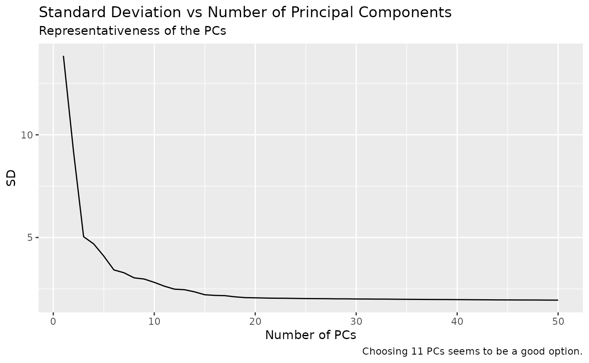
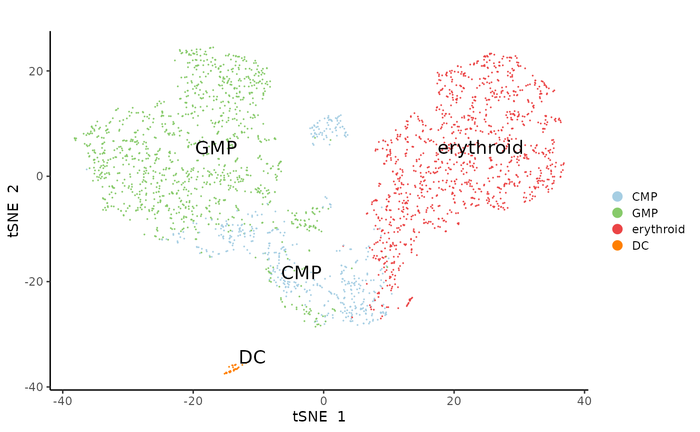
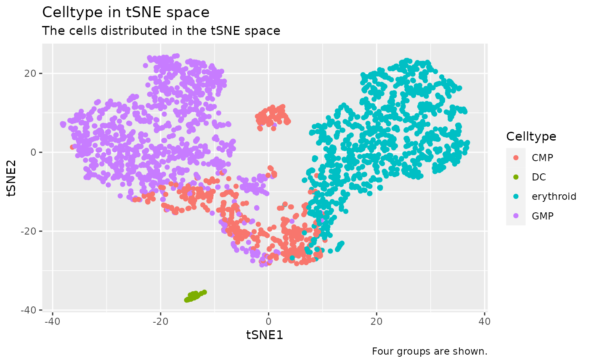
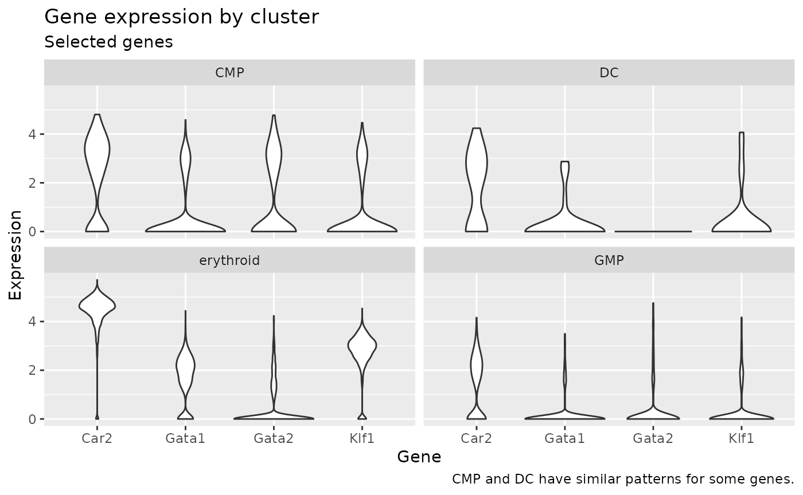

Example analysis
example_analysis.RmdIn this example, we will analyse a mouse single-cell RNA-sequencing data to investigate transcriptional heterogeneity in myeloid progenitors.
library(fusca)
library(tidyverse)
#> ── Attaching packages ─────────────────────────────────────── tidyverse 1.3.2 ──
#> ✔ ggplot2 3.3.6 ✔ purrr 0.3.4
#> ✔ tibble 3.1.8 ✔ dplyr 1.0.9
#> ✔ tidyr 1.2.0 ✔ stringr 1.4.0
#> ✔ readr 2.1.3 ✔ forcats 0.5.2
#> ── Conflicts ────────────────────────────────────────── tidyverse_conflicts() ──
#> ✖ dplyr::filter() masks stats::filter()
#> ✖ dplyr::lag() masks stats::lag()
library(here)
#> here() starts at /home/rafael-peixoto/Desktop/jhu/classes/PH.140.840/project3/package_website/fuscaThe original source of the data was presented in the article Transcriptional Heterogeneity and Lineage Commitment in Myeloid Progenitors by Paul et al (Cell, 2015). The processed data is available at the github repo.
Get data.
Create object.
cellrouter <- CreateCellRouter(data,
assay.type = "RNA",
min.cells=3, min.genes=0)
#> [1] 3449 2699Add metadata.
cellrouter <- addInfo(cellrouter, metadata = samples, colname = 'celltype', metadata.column='cell_type')
cellrouter <- addInfo(cellrouter, metadata = samples, colname = 'celltype2', metadata.column='cell_type2')Process data.
cellrouter <- Normalize(cellrouter)
cellrouter <- scaleData(cellrouter)
cellrouter <- computePCA(cellrouter, num.pcs = 50, seed=42) Plot PCA SD.
data.frame(component = 1:50,
sd = cellrouter@pca$sdev[1:50]) %>%
ggplot(aes(x = component, y = sd)) +
geom_line() +
labs(title = "Standard Deviation vs Number of Principal Components",
subtitle = "Representativeness of the PCs",
caption = "Choosing 11 PCs seems to be a good option.",
x="Number of PCs", y="SD")
Calculate reduced dimension.
cellrouter <- computeTSNE(cellrouter, num.pcs = 11, seed=42, max_iter = 1000)The package already provides functions to create a variety of plots.
plotReducedDimension(cellrouter, reduction.type = "tsne", annotation = "celltype", annotation.color = "celltype_color", showlabels = T, dotsize = 0.01, labelsize = 5, convex = FALSE)
To create the same graph by hand, you would need to code.
as.data.frame(cellrouter@tsne$cell.embeddings) %>%
mutate(sample_id = rownames(cellrouter@tsne$cell.embeddings)) %>%
left_join(cellrouter@assays$RNA@sampTab, by = "sample_id") %>%
rename_with(~ tolower(gsub(" ", "_", .x, fixed = TRUE))) %>%
ggplot(aes(x = tsne_1, y = tsne_2, color = celltype)) +
geom_point() +
labs(title = "Celltype in tSNE space",
subtitle = "The cells distributed in the tSNE space",
caption = "Four groups are shown.",
x="tSNE1", y="tSNE2", color="Celltype")
Other analysis can also be created using the expression matrix.
as.data.frame(t(cellrouter@assays$RNA@ndata)) %>%
select(c('Gata2', 'Gata1', 'Car2', 'Klf1')) %>%
mutate(sample_id = cellrouter@assays$RNA@sampTab$sample_id) %>%
right_join(cellrouter@assays$RNA@sampTab, by = "sample_id") %>%
select(c('Gata2', 'Gata1', 'Car2', 'Klf1', 'celltype')) %>%
pivot_longer(-celltype, names_to = "gene", values_to = "expression") %>%
ggplot(aes(x = gene, y = expression)) +
geom_violin() +
facet_wrap(. ~ celltype) +
labs(title="Gene expression by cluster",
subtitle="Selected genes",
caption="CMP and DC have similar patterns for some genes.",
x="Gene", y="Expression") We can use map functions to compare genes individually and across groups.
expression <- as.data.frame(t(cellrouter@assays$RNA@ndata)) %>%
select(c('Gata2', 'Gata1', 'Car2', 'Klf1'))
mean_dif = mean(map2_dbl(expression$Gata2, expression$Gata1, ~ (.x - .y)))
paste("Difference between Gata2 and Gata1 expression:", mean_dif)
#> [1] "Difference between Gata2 and Gata1 expression: -0.311274992167593"
count_dif = sum(map2_lgl(expression$Gata2, expression$Gata1, ~ (.x > .y)))
paste("Number of cells in which Gata2 expression is greater than Gata1 expression:", count_dif)
#> [1] "Number of cells in which Gata2 expression is greater than Gata1 expression: 386"